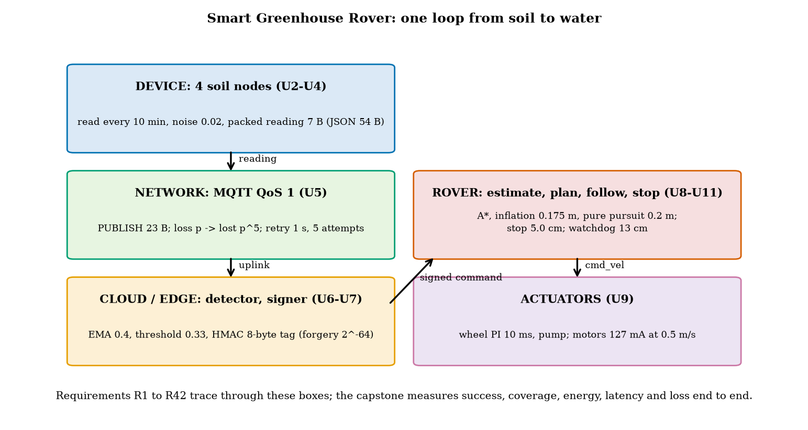
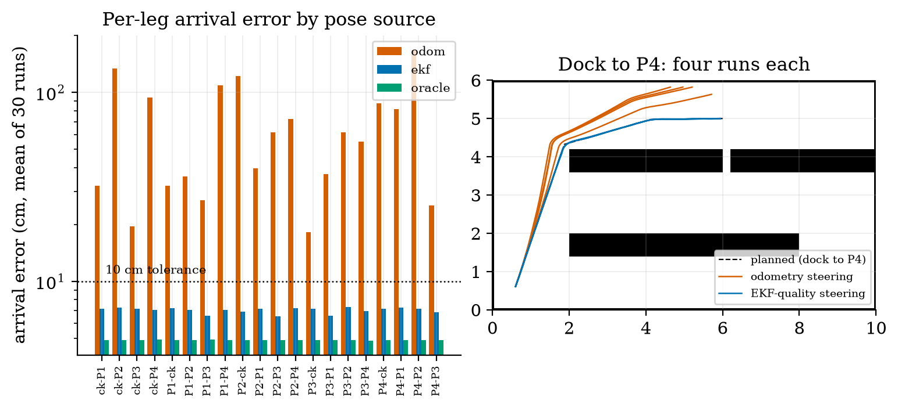
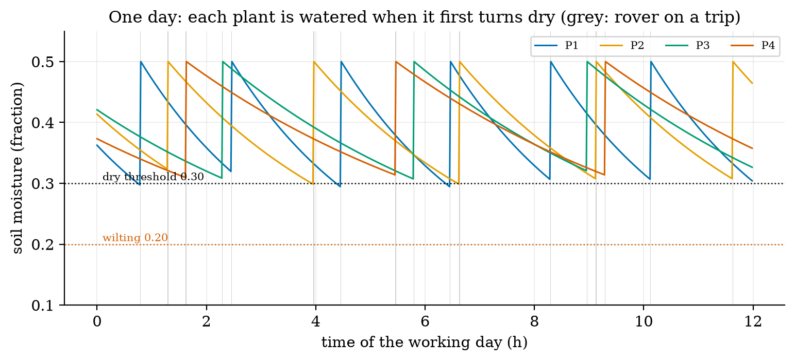
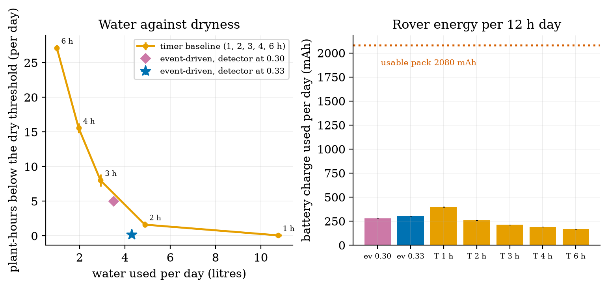
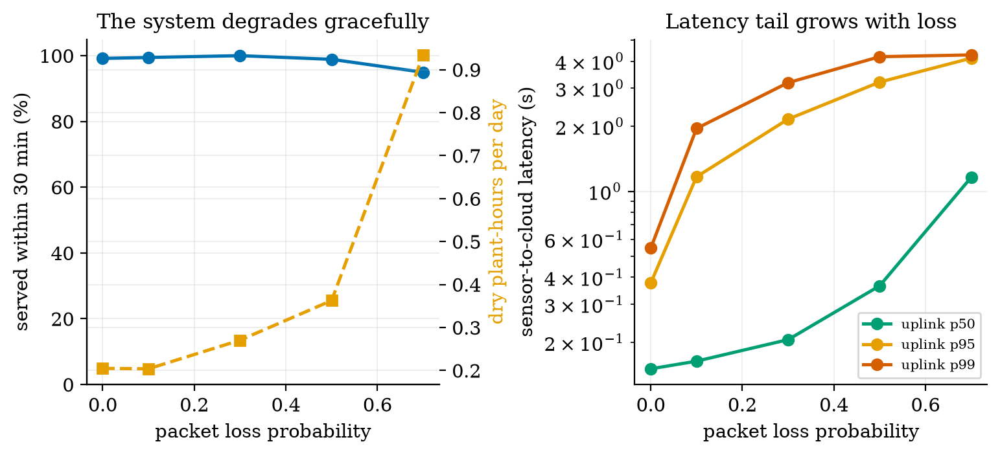
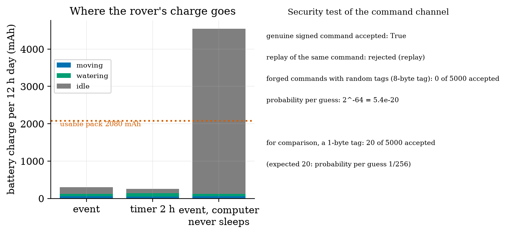

Unit 12 ready
Capstone: The Smart Greenhouse Rover as One System
Every layer in one system test: success rate, energy, latency, loss and the report.
Session map
After this session you can:
- integrate sensing, network, security, cloud logic, estimation, planning, control and energy into one end-to-end simulation, and say which parts of it are real code from Units 1 to 11 and which are assumed;
- define and measure the success rate, coverage, energy, message latency and loss of a whole system, with confidence intervals over repeated runs;
- compare a design against a baseline, run ablations, and find the flaw that no unit test found (here, a detector threshold that missed a fifth of the deadlines);
- trace every requirement of the course to a result, an assumption or an open item;
- write an engineering report on a system, and pick one of ten alternative capstone briefs.
- Prerequisites: all of Units 1 to 11. In particular the shared rover (Units 8, 9, 11), the occupancy grid and filters (Unit 10), MQTT and HMAC commands (Units 5 and 7).
- Difficulty ladder used: easy → medium → medium-hard → hard (Sections 3.1 to 3.4); the hardest tier is posed as open questions in Section 3.5.
- Deliverables: this document (.tex, .pdf, .docx), 6 figures, the module
codes/capstone/greenhouse_rover/(plan_legs,run_leg,leg_reliability,simulate_day,security_test,send_qos1, the energy model; 6 tests), the logs of every printed number (fig0N_log.txt,analysis_trace_log.txt), and the report skeleton and ten briefs in Section 3.5. - Source anchors: nothing new is quoted from a paper; every component is the code of an earlier Unit. The greenhouse, the four plants’ drying time constants (3, 4, 5, 6 hours), the thresholds (dry 0.30, wilting 0.20), the sensor noise (0.02), the link model (loss probability, 80 ms plus an exponential latency), the pump and idle currents, and the “EKF-quality” pose noise (2 cm, 2 cm, 0.5 degree) are assumed. The EKF-quality pose is what Unit 10 reached beside walls in a corridor; it is assumed, not demonstrated, for every leg of this room. Nothing ran on hardware.
1. Terms: the term tree
| Term | Symbol | One-line meaning | Where it appears | New / known |
|---|---|---|---|---|
| system test (end to end) | running all layers together on a task and measuring the outcome | 3.1 | new | |
| task success rate | the fraction of dry events watered within the 30-minute deadline | 3.1 | new | |
| coverage | the fraction of plant-hours with moisture at or above the dry threshold | 3.1 | new | |
| message loss and delivery | the fraction of messages that never arrive (after retries) or do | 3.3 | known | |
| tail latency (percentile) | p_{95} | the delay that all but the slowest 5% of messages beat | 3.3 | new |
| baseline | the simple design the new one must beat (here, a timer) | 3.1 | new | |
| ablation | changing one design choice at a time to see what it is worth | 3.4 | new | |
| Monte Carlo confidence interval | the mean over many seeded runs with its 95% interval 1.96\,s/\sqrt n | 3.1 | new | |
| requirement trace | a table from each requirement to the evidence for it | 3.4 | new | |
| state of charge and daily energy | mAh | battery charge used per day against the usable charge | 3.3 | known |
| engineering report | a document that states the problem, method, results with uncertainty, limits and decisions | 3.5 | new |
Terms used but not taught here: statistical hypothesis tests (named: here a 95% interval is quoted instead), queueing theory (named), formal verification (named), digital twins at scale (Unit 6), fleet management (named).
2. Remember
A unit test shows that a part does what its author expects. A system test shows that the parts together do what the user needs. The two disagree surprisingly often: every component here passed its own tests, and the first end-to-end run still missed 22% of its deadlines.
- Task success rate: a dry event is served if the plant is watered within 30 minutes of its moisture first falling below 0.30. (2) Coverage: 1-\dfrac{\text{dry plant-hours}}{4\times12} over a 12-hour working day. (3) Energy: battery charge used per day, against the usable 2080 mAh. (4) Message latency: the sensor-to-cloud and command delays, as percentiles. (5) Message loss: the fraction of messages never delivered. Every measure is a mean over 40 simulated days with its 95% interval.
Memory hooks.
- A system is as good as its worst-integrated seam.
- Always run the baseline; a design that is not compared is not evaluated.
- Change one thing at a time (an ablation), and print what it cost as well as what it gained.
- Quote the interval, not just the mean.
- An assumption stated is a limit; an assumption hidden is a bug.
Before you read on: three predictions (answers in Section 10).
- The rover steers on encoder odometry alone (right wheel 0.5% large). Over a 15-second trip to a plant, does it arrive within 10 cm of the plant: about always, about half the time, or almost never?
- A timer baseline waters all plants every 2 hours. An event-driven design waters only the dry ones. Which uses less water, which leaves fewer plant-hours dry?
- A link loses 10% of packets; MQTT QoS 1 retries up to 5 times. What fraction of messages is lost for good: about 10%, about 1%, or about 0.001%?
Recall quiz (answers in Section 10).
- Why is the mean of 40 runs quoted with an interval?
- What does an ablation change, and how many things at a time?
- Why is the baseline part of the experiment, not an afterthought?
- What does the 95th-percentile latency say that the mean does not?
- Which assumption of this capstone does Unit 10 support only beside a wall?
3. Understand: the system
3.1 Tier 1 (easy): the whole loop, and how to measure it
Figure 1 is the system of the course in one picture. Four soil nodes read the moisture of four plants every 10 minutes (Units 2 to 4) and send a 7-byte packed reading (Unit 6: JSON 54 bytes, CBOR 51) as an MQTT QoS 1 PUBLISH of 23 bytes on the wire (Unit 5). The cloud filters the readings with an EMA (coefficient 0.4, Unit 3), flags a plant whose filtered moisture falls below a threshold (a hysteresis detector, Unit 6), and sends the rover a command signed with an HMAC with an 8-byte tag and a counter (Unit 7). The rover verifies it, plans the order of the visits (the best of all orders) and the paths (A* on the grid inflated by 0.175 m, then line-of-sight smoothing; Unit 11), follows them with pure pursuit on a pose estimate (Units 9 and 10), waters each plant for 20 s, and returns to the dock.

The test world. A 10 m by 6 m greenhouse with the two plant beds and the crate of Unit 11, the dock at (0.6, 0.6) and four plants. Each plant’s soil moisture m decays toward 0.10 with a time constant of 3, 4, 5 or 6 hours (each varied by \pm10\% from day to day, and all assumed), and is set to 0.50 by a watering. A plant is dry below 0.30 and wilting below 0.20; moisture falls from 0.30 to 0.20 in \tau\ln2, 2.1 to 4.2 hours. A working day is 12 hours; the rover’s pack is the 2600 mAh pack of Unit 2 with 80% usable.
The measures (Section 2). The success rate is the fraction of dry events served within 30 minutes; the coverage is the fraction of plant-hours not dry. All numbers are means over 40 simulated days (seeds 0 to 39) quoted with their 95% interval 1.96\,s/\sqrt{40} (the standard error of a mean; a normal approximation, adequate here).
The baseline. A timer: no sensors, no cloud; every N hours the rover visits all four plants in the best order and waters them, whatever their state. It is the system a gardener with a clock would build, and it is what the event-driven design must beat. We run it for N=1,2,3,4,6 hours.
3.2 Tier 2 (medium): the navigation layer, as part of the system
The rover must reach each plant within 10 cm (the pump’s nozzle reach, assumed) without touching an obstacle. The system uses the real planners and the simulated rover of Units 8 to 11 for this: all 20 legs between the dock and the four plants are planned (A*, inflation 0.175 m, smoothing) and driven 30 times each with the right wheel 0.5% large and random slip (Unit 8), pure pursuit with a lookahead of 0.2 m, and a 30 ms lag in the turn rate (Unit 9), under three pose sources (fig02_legs.py):
| steering on | mean success over the 20 legs | mean arrival error | collision probability | mean leg time |
|---|---|---|---|---|
| encoder odometry | 0.2% | 65.8 cm | 62.0% | 15.3 s |
| EKF-quality estimate (assumed noise) | 99.3% | 7.1 cm | 0% | 15.0 s |
| true pose (oracle) | 100% | 4.9 cm | 0% | 15.3 s |

The 4.9 cm of the oracle is the stopping criterion (the controller stops within 5 cm of the goal); the EKF-quality runs add the 2 cm of pose noise. The leg reliabilities are the interface between the navigation layers and the rest of the system: the day simulation uses each leg’s measured time and success probability (the EKF-quality legs fail in about one run in 150: four of the 20 legs failed once in 30 runs, a success rate of 0.967, and the other 16 never failed).
An honest limit. The “EKF-quality” pose is true pose plus noise of 2 cm, 2 cm and 0.5 degree: the accuracy Unit 10 measured for its EKF beside a wall and for the grid experiment. In this room the rover is not always beside a wall (the aisles are 1.6 m wide, the aisle between the beds has walls on both sides, but the paths cross open floor). The capstone therefore assumes that the estimator keeps that accuracy everywhere; it does not run the Unit 10 filter on these legs. This is the weakest link of the integration and the first thing to test on real hardware.
3.3 Tier 3 (medium-hard): the day, the network, the tuning
3.3.1 One day
Figure 3 shows one simulated day of the event-driven system. Each plant’s moisture decays until its filtered reading falls below the threshold; the cloud signs a command; the rover waters the plant and the moisture jumps to 0.50. That day (fig03_log.txt): 5 dry events, all served; 17 trips; 305 messages, none lost; the uplink latency percentiles were 0.17, 1.15 and 1.32 s (50th, 95th, 99th) and the command latency 0.15, 1.26 and 1.37 s.

3.3.2 The first design failed its own test
The first design flagged a plant when its filtered reading fell below the dry level itself, 0.30. Over 40 days it served 77.6% of the dry events within 30 minutes (\pm3.3), with 4.99 dry plant-hours per day. The cause is arithmetic, not a bug: a reading every 10 minutes, a filter (coefficient 0.4) that lags the true moisture, a hysteresis detector that needs the filtered value to cross and a trip of up to 100 s together add up to a delay of the same order as the deadline. The detector fires after the plant is dry, and then the clock is already running. Moving the detector threshold to 0.33 warns earlier: the moisture slope at 0.30 is -(0.30-0.10)/\tau=-0.2/\tau, so a threshold 0.03 higher gives a lead of about 0.03\tau/0.2=0.15\,\tau: roughly 27 minutes for \tau=3 h and 54 minutes for \tau=6 h (25 and 50 minutes from the exact exponential), which absorbs the sampling and filter delays. Result: 99.6% served (\pm0.8), 0.21 dry plant-hours per day, at the price of more water (3.50 to 4.30 litres per day) and more trips (13.1 to 15.9). None of the unit tests could have found this: it is a property of the composition.
3.3.3 The baseline comparison
Forty days of each design (fig04_log.txt; mean \pm 95% interval):
| design | served in 30 min | coverage | water (L/day) | trips/day | battery (mAh/day) |
|---|---|---|---|---|---|
| event, detector 0.30 (first design) | 77.6% (\pm 3.3) | 89.6% | 3.50 (\pm 0.06) | 13.1 | 279.7 (\pm 1.7) |
| event, detector 0.33 | 99.6% (\pm 0.8) | 99.6% | 4.30 (\pm 0.08) | 15.9 | 302.4 (\pm 2.0) |
| timer every 1 h | 100% | 99.9% | 10.78 (\pm 0.14) | 12.0 | 397.8 (\pm 3.5) |
| timer every 2 h | 59.8% (\pm 8.9) | 96.6% | 4.89 (\pm 0.10) | 6.0 | 258.7 (\pm 2.7) |
| timer every 3 h | 26.0% (\pm 3.2) | 83.3% | 2.92 (\pm 0.09) | 4.0 | 212.3 (\pm 2.1) |
| timer every 4 h | 8.9% (\pm 2.3) | 67.6% | 1.96 (\pm 0.05) | 3.0 | 189.1 (\pm 2.0) |
| timer every 6 h | 0% | 43.5% | 1.00 | 2.0 | 166.4 (\pm 1.2) |

What the event design does not win: it makes 15.9 trips a day against the 2-hour timer’s 6.0, and uses 17% more battery charge than that timer (302 against 259 mAh). The event-driven design buys water and plant health with rover travel and radio traffic.
3.3.4 The network
The node-to-cloud link is modelled as independent packet loss p (assumed 10% at the baseline), QoS 1 retries every second up to 5 attempts, and a one-way latency of 80 ms plus an exponential with mean 100 ms. A message is lost for good only if all 5 attempts are lost, with probability p^5: 0.001% at p=0.1 (prediction 3 of Section 2: about 0.001%) against the 10% of QoS 0, and in the 12155 messages simulated at p=0.1 none was lost (requirement R14: 99.999%). With the sweep (fig05_log.txt; 30 days each):
| packet loss | lost for good | theory p^5 | uplink latency p50 / p95 / p99 | served in 30 min | dry plant-h/day | bytes/day |
|---|---|---|---|---|---|---|
| 0.0 | 0% | 0% | 0.15 / 0.38 / 0.55 s | 99.2% | 0.20 | 7220 |
| 0.1 | 0.000% | 0.001% | 0.16 / 1.17 / 1.95 s | 99.4% | 0.20 | 8031 |
| 0.3 | 0.26% | 0.24% | 0.21 / 2.16 / 3.18 s | 100% | 0.27 | 10250 |
| 0.5 | 2.7% | 3.1% | 0.37 / 3.20 / 4.20 s | 98.9% | 0.36 | 13675 |
| 0.7 | 15.7% | 16.8% | 1.16 / 4.13 / 4.28 s | 94.9% | 0.93 | 20024 |

Telemetry timing (requirement R2: under 2 s). At p=0.1 the median is 0.16 s, the 95th percentile 1.17 s, but 0.96% of the messages take more than 2 s (they needed a second retry after the 1 s timer). With a retry timer of 0.5 s the share over 2 s falls to 0.026%, with 0.3 s to 0 (0 of the simulated messages, also at loss 0.3 and 0.5, p99 1.1 and 1.4 s), at the same byte cost: a shorter retry interval is free in bytes and decisive for the tail (analysis_trace_log.txt; the latency model is assumed). With 8031 bytes per day on the uplink (the commands included) against 24,443 bytes for the same readings as JSON (3.04 times the bytes per PUBLISH), the packed payload of Unit 6 is worth a factor of 3 in radio time.
3.4 Tier 4 (hard): energy, security, ablations and the requirement trace
3.4.1 Energy
The rover’s current comes from the earlier models: moving, the two motors at 0.5 m/s on the flat (Unit 9 motor model: 4.34 V and 0.108 A each, 127 mA from the battery) plus the edge computer (375 mA, Unit 2) = 502 mA; watering 375 + 300 mA (pump, assumed) = 675 mA; docked, the computer sleeps and the radio listens in power-save mode, 15 mA (assumed; 10 mA for the timer baseline, which only needs a clock). In a day (fig06_log.txt): the event design moves 439 s (61 mAh), waters 344 s (65 mAh) and idles 11.8 h (177 mAh): 302 mAh, 14.5% of the usable 2080 mAh: 6.9 days per charge. The timer’s 258.7 mAh gives 8.0 days.

The decisive design choice is not in the motion at all: a rover whose computer stays on while docked would use 0.375\times12=4500 mAh a day, 216% of the usable pack (the bar on the right): the pack would be flat in 5.5 hours. Sleeping the computer between commands and listening with the low-power radio is what makes the rover feasible; the motors themselves use 5% of the day’s charge (15.5 of 302 mAh). (Unit 2 found the same at a small scale: “the computer, not the wheels, is the larger load”.) This design needs the radio’s power-save mode to wake the computer in time, which was assumed, not tested.
The soil nodes are a separate question (requirements R1 and R4): at the Unit 2 power budget, one reading every 60 s lasts 20.8 days on the 2000 mAh battery (fails R4: 30 days), every 5 minutes 102.6 days, every 10 minutes 202 days (analysis_trace_log.txt; 97% of the charge is still in the 2 s awake). The system test shows that 5-minute readings serve 100% of the events (0.01 dry plant-hours) and 10-minute readings 99.6%, while 30-minute readings serve only 54.9%: the sampling period can be relaxed from the 60 s of requirement R1 to 5 minutes, which meets both R4 and the task. (The requirement owner must approve this change; it is a proposal.)
3.4.2 Security
The command channel is the only way to make the rover move (R7). security_test sends the rover’s verifier a genuine signed command (accepted), the same command again (refused as a replay: the counter must increase), and 5000 commands with random 8-byte tags and fresh counters: 0 accepted. The probability per guess is 2^{-64}=5.4\times10^{-20}. For comparison with a 1-byte tag, 20 of 5000 were accepted, the expected 5000/256=19.5: the truncation length is the difference between safe and open. Together with Unit 7’s 100,000-guess run and the ACL, R7 and R24 hold in the model; the verifier itself, the key storage and the radio are, as in Unit 7, not attacked.
3.4.3 Ablations: what each layer is worth
Changing one thing at a time from the tuned design (40 days each, analysis_trace_log.txt):
| change | served in 30 min | dry plant-h/day | notes |
|---|---|---|---|
| none (the design) | 99.6% | 0.21 | |
| detector at 0.30 instead of 0.33 | 77.6% | 4.99 | the first design |
| readings every 30 min instead of 10 | 54.9% | 6.25 | too slow for the 30-minute deadline |
| readings every 5 min | 100% | 0.01 | 594 messages/day instead of 304 |
| packet loss 0.5 instead of 0.1 | 98.9% | 0.36 | latency tail 3.2 s |
| rover steers on odometry instead of the EKF-quality pose | 0% | 39.44 | every trip fails: 66.6 failed trips a day |
| replace the planner’s inflation by none | (collisions, Unit 11) | 37 of 191 sample points in collision | |
| rover computer never sleeps | pack empty in 5.5 h | 4544 mAh per day |
3.4.4 The requirement trace
Every requirement of the course, with where it ended. “Component” means it was verified in its Unit and not re-exercised by the system test; “system” means this Unit’s simulation exercised it.
| id | requirement (short) | final status |
|---|---|---|
| R1 | readings every 60 s | change proposed: 5 min (system: 100% served; 60 s fails R4) |
| R2 | telemetry under 2 s | system: p95 1.17 s; 0.96% over 2 s at 1 s retries, 0 with 0.3 s retries |
| R3 | stop before an obstacle (under 5 cm) | component (U11): ping at most every 42.5 ms; not exercised in the day simulation |
| R4 | node battery 30 days | system: 20.8 days at 60 s; 102.6 days at 5 min; 202 days at 10 min |
| R5 | position error after 20 m under 10% | component (U10): EKF 0.25%, sideways 0.6 cm, beside a wall |
| R6 | plants watered when dry | system: 99.6% within 30 min, 0.21 dry plant-h/day (first design 77.6%) |
| R7 | only authorised commands move the rover | system: 0 of 5000 forged accepted; replay refused |
| R8, R9 | motor drive and jam protection | component (U2): bridge drop 0.4 V; rated 1.6 A |
| R10 | rover endurance | system: 302 mAh/day = 6.9 days per charge with a sleeping computer (3.1 h of continuous motion at full load, U2) |
| R11-R13 | moisture, temperature, speed accuracy | component (U3) |
| R14 | 99% of readings delivered | system: 99.999% at 10% loss with QoS 1 (QoS 0: 90%) |
| R15, R17 | encoder counts; round trips | component (U4, U5) |
| R16 | (not used: a gap in the numbering) | |
| R18-R21 | stale nodes, false alarms, fault detection, data volume | component (U6) |
| R22-R26 | signed updates, credentials, ACL, cost of security, privacy | component (U7) |
| R27-R29 | turning in place, nozzle arm, turning radius | component (U8) |
| R30-R34 | wheel loop, slope, stall, line following, loop timing | component (U9); the day simulation uses the 30 ms lag |
| R35-R38 | wall error, filter consistency, temperature correction, map | component (U10); R36: overconfident along the wall (open) |
| R39-R42 | path, no collisions, visiting order, path-following error | system for R39 to R41 (leg success 99.3%); component for R42 (U11) |
| S1 | safe state on link loss | component (U11): timeout 0.2 s, 12.9 cm at 0.5 m/s; not exercised in the day simulation |
3.5 Tier 5 (hardest): open questions, the report, and ten briefs
Open questions.
- Validate the “EKF-quality” assumption. Design the experiment that would show whether a real rover keeps 2 cm and 0.5 degrees on all 20 legs of this room: which sensors, how the truth is measured (tape marks? an overhead camera?), how many runs, and what result would force you to change R40.
- Make the rover’s trips cheaper. The event design makes 15.9 trips a day to water four plants. Design a rule that batches waterings (waits for a second flag within 10 minutes, say), predict what it costs in dry hours, and test it with
simulate_day. - Failure injection. Add a stuck sensor (a node that sends a constant reading), a dead node and a jammed wheel to the simulation. Which layer catches each one (Unit 6’s stale detection, Unit 9’s stall detection), and what is the worst-case unserved event?
The report. A capstone report has one page per question. (1) Problem and requirements: the goal, the five measures, the requirement table. (2) Design: the layers and the interfaces, with every assumed value listed. (3) Method: what was simulated or built, how many runs, the baseline. (4) Results: the table of Section 3.3.3, each number with its interval, and the figures. (5) Ablations and failures: what each choice is worth and what went wrong first (here the 77.6%). (6) Limits and open items: what is assumed, what is not verified (hardware, the pose estimate, the radio power-save mode), and what you would measure first. (7) Decisions: what you recommend (here: detector 0.33, readings every 5 minutes, retry timer 0.3 s, computer sleep) and what you ask the requirement owner to change. Keep the numbers in the report identical to the numbers in the logs.
Ten alternative capstone briefs. Each uses the same loop: sense, communicate, decide, act, measure, compare with a baseline.
| # | brief | the loop | measures | baseline |
|---|---|---|---|---|
| 1 | smart irrigation (fixed beds, valves instead of a rover) | moisture nodes, MQTT, cloud rule, valve commands | dry hours, water used, valve switches | timer |
| 2 | air-quality network | gas and temperature nodes, edge aggregation, alerts | alarms found, false alarms per day, bytes/day, battery life | fixed threshold, raw upload |
| 3 | line-following delivery robot | line sensors, wheel PI, stop on obstacle | lap time, lateral error, stops avoided | open-loop drive |
| 4 | warehouse inventory robot | grid map, A*, tag reads | shelves covered, path length, energy | fixed route |
| 5 | fall-detection wearable | IMU at 100 Hz, edge detector, alert over BLE | detection rate, false alarms per day, battery life | threshold on one axis |
| 6 | smart parking | ultrasonic or magnetic sensors, MQTT, dashboard | occupancy accuracy, latency, node battery | manual count |
| 7 | energy monitor | current sensors, 1 s sampling, edge aggregation, anomaly alerts | alerts found, bytes saved, privacy leak (Unit 7) | raw upload |
| 8 | 2-link drawing arm | IK, joint PID, trajectory | tracking error, workspace coverage, joint rates | straight joint interpolation |
| 9 | self-balancing robot (simulated) | IMU, Kalman filter, PD control | time upright, recovery from a push, delay margin | no filter |
| 10 | swarm patrol (simulated) | several rovers, shared grid, task allocation | area covered, duplicated coverage, messages | independent random walk |
4. Apply
4.1 Worked problems
Problem 1 (coverage). A design leaves the four plants dry for 0.84 plant-hours over a 12 h day. What is the coverage?
Solution. 1-0.84/48=0.9825: 98.25%.
Problem 2 (loss after retries). QoS 1 with 5 attempts at packet loss 0.4. What fraction of messages is lost for good, and with what probability does a delivered message need more than one attempt?
Solution. Lost: 0.4^5=1.02\%. Delivered needing more than one attempt: \dfrac{0.4-0.4^5}{1-0.4^5}=\dfrac{0.3898}{0.9898}=39.4\%.
Problem 3 (node battery). The node reads every 900 s. Using Unit 2’s states (50 mA 0.2 s, 100 mA 1.3 s, 140 mA 0.3 s, 50 mA 0.2 s, 0.01 mA sleep), find the battery life of the 2000 mAh battery with 80% usable.
Solution. Awake charge 10+130+42+10=192 mA s; sleep 0.01\times898=8.98; total 200.98 mA s per 900 s: 0.2233 mA; life 1600/0.2233/24=298.5 days.
Problem 4 (interval). Over 40 days the success rate has mean 99.6% and a 95% interval of \pm0.8 points. What is the standard deviation of the daily success rate?
Solution. 1.96\,s/\sqrt{40}=0.8\Rightarrow s=0.8\times6.325/1.96=2.6 points.
Problem 5 (threshold lead). A plant dries with \tau=4 h toward 0.10. By how many minutes does raising the detector threshold from 0.30 to 0.33 advance the warning?
Solution. Slope at 0.30: 0.2/4=0.05 per hour; 0.03 higher: 0.03/0.05=0.6 h = 36 minutes (more exactly \tau\ln(0.23/0.20)=0.56 h = 33.5 minutes with the exponential curvature).
4.2 Code and figures
import greenhouse_rover as G
legs = G.plan_legs() # 20 planned legs (A*, inflation 0.175 m, smoothing)
rel = G.leg_reliability(legs, "ekf", n=30) # success and time of each leg
day = G.simulate_day("event", seed=3, legs=legs, rel=rel, detect_lo=0.33)
print(day["success"], day["dry_h"], day["litres"], day["energy_mAh"])
base = G.simulate_day("timer", seed=3, legs=legs, rel=rel, timer_period_h=2.0)
print(G.percentiles(day["lat_up"])) # p50, p95, p99 of the sensor-to-cloud latency
print(G.security_test(5000)) # forged and replayed commands against the verifierThe module and README are in codes/capstone/greenhouse_rover/. Its six tests check: the cruise current (0.127 A) and the payload sizes; the 20 planned legs (collision-free against the real body); that odometry steering fails where the EKF-quality estimate succeeds; the QoS 1 loss statistics against p^5; the security test (genuine accepted, replay refused, 0 forged); and the properties of the day simulation (determinism, more loss giving more lost messages, a longer timer period giving more dry hours and less water).
What would look different if the system were wrong? If the loss model were wrong the lost fraction would not follow p^5 (it follows it within the simulation noise: 0.26% against 0.24% at p=0.3); if the detector flaw were not the cause of the 77.6%, raising the threshold would not have moved it (it moved to 99.6%, and the lead of 0.15\tau explains the size of the change).
5. Analyze
Limits. With a detector threshold of 0.36 the design serves 100% with 5.49 litres a day and 20 trips: the water and trip cost rises without further benefit; at 0.30 it is the flawed first design. As the sampling period grows to 30 minutes the success falls to 54.9%; as it shrinks to 60 s it saturates at 100% with 2902 messages a day (a 10-fold radio cost for no gain).
Dominance. Motion and watering are 42% of the rover’s day (126 of 302 mAh; the motors alone 5%), the idle listening at 15 mA is 58% (177 mAh); the computer’s sleep decides the energy. In the latency tail, retries dominate: the 99th percentile at p=0.1 is 1.95 s of which at most 0.1 s is network latency.
Order-of-magnitude estimate. Dry events per day: each plant dries to 0.30 every \tau\ln\frac{0.5-0.1}{0.3-0.1}=\tau\ln2 hours after a watering: 12/(0.69\tau) with \tau=3,4,5,6: 5.8, 4.3, 3.5, 2.9 — 16.5 watering cycles in 12 h; the simulated 15.9 trips (and 2.58 events per day for the tuned design, which waters before the plants are dry) are the same order.
Sensitivity. The result is insensitive to the network (loss 0 to 0.5: 98.9% to 100%), moderately sensitive to the detector threshold and the sampling period, and entirely dependent on the pose estimate and the sleeping computer. The first three are design parameters; the last two are assumptions of this capstone, and need hardware to confirm.
Failure modes. (1) A composition flaw no unit test sees (the threshold). (2) Odometry-only navigation. (3) A computer that never sleeps. (4) A tail-latency target missed with a slow retry timer. (5) Sampling too slowly for the plant’s dynamics. (6) A stuck or dead sensor (not simulated: open question 3). (7) Reporting means without intervals. (8) A requirement kept past its usefulness (R1 at 60 s costs a factor of five in node battery for no task gain).
Items used from the pedagogy checklist: limits, dominance, estimate, sensitivity, failure modes, convergence (40-day means with intervals), invariants (water used equals waterings times 0.25 L; the loss follows p^5), residual (the 77.6% found by the end-to-end test), uncertainty (95% intervals everywhere), ablation, baseline comparison, and a priori versus a posteriori (the lead time of the threshold was computed before the change was simulated).
6. Evaluate
Was the event-driven design worth it? Against a careless timer, yes: the same dryness with 12% less water than a 2-hour timer and 60% less than a 1-hour timer, in exchange for 17% more battery charge than the 2-hour timer and 2.6 times its trips, and for a cloud, a radio and a signing key to maintain. For a four-plant greenhouse the gardener’s clock at 1 hour is a respectable answer (0.07 dry hours, 10.8 litres); the sensor system pays off when water is expensive or the plants are many. Say so in the report: an honest evaluation includes the case where the simple baseline wins.
What the simulation does not tell you. It has no people or obstacles, no wet floors, no weather, no sensor faults, no radio interference, no battery ageing and no maintenance. Its link, soil and power models are assumed; the pose estimate is assumed; the energy of the idle states is assumed. It is a design tool that ranks choices and finds composition flaws, not a prediction of the real greenhouse. Where to spend the first hour of real testing: the pose estimate on the 20 legs, the power-save wake-up of the rover’s computer, and the soil sensor’s real drying behaviour.
Context. Integration testing of this kind is standard practice in systems engineering (stated from general knowledge); the habit of running a baseline and an ablation is what separates a demonstration from an evaluation. When NOT to use this method: when the model’s assumptions are the main uncertainty (measure first), when rare catastrophic events dominate (use targeted failure injection and safety analysis, not mean-over-days statistics), and when the real system will have a different structure from the simulated one.
Honesty about this Unit’s numbers. Every number comes from a script run (the logs are in figures/); every parameter in the assumed list of the Source anchors is a round number of the right order, not a measurement. The legs’ reliability depends on an assumed pose-noise model. The statistics are means over 40 seeded days with a normal-approximation interval. The detector threshold was tuned on the same 40 seeds it was evaluated on (a small selection effect: the three thresholds tried on the ablation grid are few, but the effect was not tested on fresh seeds).
7. Create
- Replace the assumption. Run the Unit 10 EKF on all 20 legs (it needs range updates against beds as well as walls) and compare the arrival errors with the assumed 2 cm; update
run_leg. - Add faults. Inject a stuck node, a dead node and a jammed wheel (open question 3) and measure the unserved events with Unit 6’s stale detector switched on and off.
- Add people. Make an obstacle appear in an aisle at random and exercise the stop budget of Unit 11 (ping 42.5 ms) and the watchdog of 0.2 s; measure near misses.
- Optimise the batching rule of open question 2 and plot dry hours against trips.
- Package the whole course. The modules of every Unit plus
greenhouse_rovercan be reorganised as the packageiotrobotics(power, sensors, firmware, net, cloud, security, kinematics, control, localize, planning, capstone).
Running project, Layer 11: the integrated rover. Final requirements are in the trace table of Section 3.4.4. The system recommendations: detector threshold 0.33; readings every 5 minutes; retry timer 0.3 s; ping at most every 42.5 ms; command timeout 0.2 s; the rover’s computer sleeps while docked; EKF-quality pose is a requirement on the estimator (2 cm, 0.5 degree).
8. Visualization lesson
| Chart type | Best for | How it misleads | matplotlib call |
|---|---|---|---|
| architecture diagram with the measured numbers | the whole system and its budgets | looks complete when only the nominal flow is drawn; add the failure paths | FancyBboxPatch, ax.annotate |
| log-axis bars by condition (arrival error per leg) | many cases of one measure that differ by orders of magnitude | log axes hide small differences between small bars | ax.bar, ax.set_yscale("log") |
| multi-line time series with event shading (the day) | a process with discrete actions | the time axis hides how rare the events are; list the counts | ax.plot(t, m), ax.axvspan |
| frontier plot (two costs against each other) with error bars | comparing designs that trade one thing for another | the best point depends on the weights of the axes | ax.errorbar |
| stacked bars of a budget | where a total goes | stacking makes the middle segment hard to read | ax.bar(..., bottom=...) |
| percentile curves against a parameter (log y) | tail behaviour | a median-only plot hides the tail entirely | ax.plot(p, np.percentile(...)) |
| table with intervals | the headline comparison | too many digits; round to the interval | (a Markdown table) |
Reading Figure 4 (left) as a chart. The timer curve is a frontier: moving along it trades water for dryness. A design is better if it is below and to the left. The event design is, and the error bars are smaller than the marker, which is the real finding.
9. Problem set
- (easy) The event design serves 99.6% of events with 2.58 events per day. How many events per 40 days are unserved on average?
- (medium) With a QoS 1 retry interval of 0.5 s and 5 attempts at packet loss 0.3, what is the longest delivery latency (ignoring the one-way delay), and with what probability does a message need the fourth attempt or later?
- (medium-hard) The rover’s pack is 2600 mAh with 80% usable. If the radio idles at 40 mA instead of 15 mA, how many days does a charge last for the event design (use 61.2 and 64.5 mAh for motion and watering, and 11.78 h idle)?
- (hard) Show that raising a detector threshold from m_1 to m_2 above the dry level gives a lead of \tau\ln\dfrac{m_2-m_f}{m_1-m_f} for exponential decay toward the floor m_f, and evaluate it for m_f=0.10, 0.30 to 0.33 and \tau=3 and 6 h.
- (hardest) Propose a statistical test that decides whether a design change (say, retry 0.3 s) changed the success rate, given 40 daily results before and after; state its assumptions and say why the 95% intervals of this Unit are a weaker tool.
10. Retrieval practice and recap
Answers to the Section 2 predictions.
- Almost never: 0.2% of legs succeeded with odometry (65.8 cm mean error, 62% collisions).
- The event design uses less water (4.30 against 4.89 litres a day) and leaves fewer plant-hours dry (0.21 against 1.61).
- About 0.001%: 0.1^5=10^{-5}.
Answers to the Section 2 recall quiz.
- A single run is one draw of the weather and the noise; the 95% interval of the mean over runs says how much the mean itself could move.
- One design choice at a time; it isolates that choice’s contribution.
- A result has meaning only against the alternative it must beat.
- How bad the slow messages are: the median hides the retries that dominate the tail (1.95 s against 0.16 s at 10% loss).
- The “EKF-quality” pose accuracy of 2 cm and 0.5 degree: Unit 10 measured it beside a wall.
Explain it to a friend.
- Why did the parts pass their tests and the whole still fail 22% of its deadlines?
- Why does a sleeping computer matter more to the rover than its wheels?
- Why is the simple timer a fair baseline, and when does it win?
Re-derive by hand tomorrow, without looking: (a) the lost fraction p^n and the mean attempts of QoS 1; (b) the lead time \tau\ln\frac{m_2-m_f}{m_1-m_f} of a higher threshold; (c) the battery life of a duty-cycled node from its states.
11. Where next
- The course is complete. What remains is the hardware you choose to add: an ESP32 kit (the firmware folders of Unit 4 and the optional kit box of each lab), a real ultrasonic sensor and a real motor. Start with the three things Section 6 names: the pose estimate on a taped floor, the rover computer’s wake-up, and a soil sensor’s real drying curve.
- Terms named here but not taught: hypothesis tests, queueing theory, formal verification, fleet management. They are registered in CURRICULUM.md.
- Open threads: the pose estimate is assumed on the legs; the radio power-save wake-up is assumed; obstacles, people, sensor faults and the stop budget were not exercised end to end; the threshold was tuned on the seeds it was evaluated on; nothing ran on hardware.